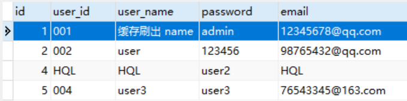

Hibernate一级缓存详解
Hibernate 是一款全自动 ORM 框架，它会在应用程序访问数据时，自动生成 SQL 语句并执行，因此开发人员不需要自己编写 SQL 语句，但这也造成它无法像 MyBatis 一样，能够直接从 SQL 层面严格控制其执行性能以及对数据库的访问频率，所以很容易出现性能不佳的情况。
为此，Hibernate 提供了多种性能优化手段（例如 HQL、懒加载策略、抓取策略以及缓存机制），其中缓存机制是 Hibernate 重要的优化手段之一，它可以有效地减少应用程序对数据库的访问的次数，提高应用程序的运行性能。
图1：缓存在系统中位置
Hibernate 也提供了缓存机制，当查询数据时，首先 Hibernate 会到缓存中查找，如果找到就直接使用，找不到时才从永久性数据存储源（通常指的是数据库）中检索，因此，把频繁使用的数据加载到缓存中，可以减少应用程序对数据库的访问频次，使应用程序的运行性能得以提升。
Hibernate 提供了两种缓存机制：一级缓存和二级缓存。下面，我们就对一级缓存进行介绍。
Hibernate 一级缓存是由 Session 接口实现中的一系列 Java 集合构成的，其生命周期与 Session 保持一致。
Hibernate 一级缓存中存放的数据是数据库中数据的备份，在数据库中数据以数据库记录的形式保存，而在 Hibernate 一级缓存中数据是以对象的形式存放的。
当使用 Hibernate 查询对象时，会首先从一级缓存中查找，若在一级缓存中找到了匹配的对象，则直接取出并使用；若没有在一级缓存中找到匹配的对象，则去数据库中查询对应的数据，并将查询到的数据添加到一级缓存中。由此可见，Hibernate 的一级缓存机制能够在 Session 范围内，有效的减少对数据库的访问次数，优化 Hibernate 的性能。
一旦对象被存入一级缓存中，除非用户手动清除，不然只要 Session 实例的生命周期没有结束，存放在其中的对象就会一直存在。当 Session 关闭时，Session 的生命周期结束，该 Session 所管理的一级缓存也会立即被清除；
1. 在 hibernate-demo 的单元测试类 MyTest 中，添加一个名为 testCacheExist 的方法，代码如下。
2. 执行该测试方法，控制台输出如下。
从控制台输出可以看出，只有第一次查询时，去数据库查询并执行了 SQL，第二次查询时，虽然没有执行任何 SQL，但也依然得到了查询结果。
这是因为第一次到数据库查询数据时，就将查询结果添加到了一级缓存中，当第二次查询时，就会直接从一级缓存中获取结果，而并没有到数据库中查询，因此没有任何 SQL 输出。
Hibernate 的 Session 中，除了一级缓存外，还存在一个与一级缓存相对应的快照区。当 Hibernate 向一级缓存中存入数据（持久态对象）时，还会复制一份数据存入快照区中，使一级缓存和快照区的数据完全相同。
当事务提交时，Hibernate 会检测一级缓存中的数据和快照区的数据是否相同。若不同，则 Hibernate 会自动执行 update() 方法，将一级缓存的数据同步更新到数据库中，并更新快照区，这一过程被称为刷出缓存（flush）；反之，则不会刷出缓存。
默认情况下，Session 会在以下时间点刷出缓存：
在单元测试类 MyTest 中，添加一个名为 testCacheFlush 的测试方法，代码如下。
执行该测试方法，控制台输出如下。
查看数据库中的 user 表，结果如下图。
为此，Hibernate 提供了多种性能优化手段（例如 HQL、懒加载策略、抓取策略以及缓存机制），其中缓存机制是 Hibernate 重要的优化手段之一，它可以有效地减少应用程序对数据库的访问的次数，提高应用程序的运行性能。
缓存
缓存是位于应用程序和永久性数据存储源（例如硬盘上的文件或者数据库）之间，用于临时存放备份数据的内存区域，通过它可以降低应用程序读写永久性数据存储源的次数，提高应用程序的运行性能。图1：缓存在系统中位置
缓存具有以下特点：注：永久性数据存储源一般包括两种，数据库和硬盘上的文件，它们都可以永久的保存数据，但本教程中的永久性数据库存储源则是特指数据库，因此在后面的教程中，我们将使用数据库来代替永久性数据存储源的书法，特此说明。
- 缓存中的数据通常是数据库中数据的备份，两者中存放的数据完全一致，因此应用程序运行时，可以直接读写缓存中的数据，而不再对数据库进行访问，可以有效地降低应用程序对数据库的访问频率。
- 缓存的物理介质通常是内存，永久性数据存储源的物理介质为硬盘或磁盘，而应用程序读取内存的速度要明显高于硬盘，因此使用缓存能够有效的提高数据读写的速度，提高应用程序的性能。
- 由于应用程序可以修改（即“写”）缓存中的数据，为了保证缓存和数据库中的数据保持一致，应用程序通常会在在某些特定时刻，将缓存中的数据同步更新到数据库中。
Hibernate 也提供了缓存机制，当查询数据时，首先 Hibernate 会到缓存中查找，如果找到就直接使用，找不到时才从永久性数据存储源（通常指的是数据库）中检索，因此，把频繁使用的数据加载到缓存中，可以减少应用程序对数据库的访问频次，使应用程序的运行性能得以提升。
Hibernate 提供了两种缓存机制：一级缓存和二级缓存。下面，我们就对一级缓存进行介绍。
Hibernate 一级缓存
Hibernate 一级缓存是 Session 级别的缓存，它是由 Hibernate 管理的，不可卸载。Hibernate 一级缓存是由 Session 接口实现中的一系列 Java 集合构成的，其生命周期与 Session 保持一致。
Hibernate 一级缓存中存放的数据是数据库中数据的备份，在数据库中数据以数据库记录的形式保存，而在 Hibernate 一级缓存中数据是以对象的形式存放的。
当使用 Hibernate 查询对象时，会首先从一级缓存中查找，若在一级缓存中找到了匹配的对象，则直接取出并使用；若没有在一级缓存中找到匹配的对象，则去数据库中查询对应的数据，并将查询到的数据添加到一级缓存中。由此可见，Hibernate 的一级缓存机制能够在 Session 范围内，有效的减少对数据库的访问次数，优化 Hibernate 的性能。
一旦对象被存入一级缓存中，除非用户手动清除，不然只要 Session 实例的生命周期没有结束，存放在其中的对象就会一直存在。当 Session 关闭时，Session 的生命周期结束，该 Session 所管理的一级缓存也会立即被清除；
一级缓存的特点
Hibernate 一级缓存具有以下特点：- 一级缓存是 Hibernate 自带的，默认是开启状态，无法卸载。
- Hibernate 一级缓存中只能保存持久态对象。
- Hibernate 一级缓存的生命周期与 Session 保持一致，且一级缓存是 Session 独享的，每个 Session 不能访问其他的 Session 的缓存区，Session 一旦关闭或销毁，一级缓存中的所有对象将全部丢失。
- 当通过 Session 接口提供的 save()、update()、saveOrUpdate() 和 lock() 等方法，对对象进行持久化操作时，该对象会被添加到一级缓存中。
- 当通过 Session 接口提供的 get()、load() 方法，以及 Query 接口提供的 getResultList、list() 和 iterator() 方法，查询某个对象时，会首先判断缓存中是否存在该对象，如果存在，则直接取出来使用，而不再查询数据库；反之，则去数据库查询数据，并将查询结果添加到缓存中。
- 当调用 Session 的 close() 方法时，Session 缓存会被清空。
- 一级缓存中的持久化对象具有自动更新数据库能力。
- 一级缓存是由 Hibernate 维护的，用户不能随意操作缓存内容，但用户可以通过 Hibernate 提供的方法，来管理一级缓存中的内容，如下表。
| 返回值类型 | 方法 | 描述 |
|---|---|---|
| void | clear() | 该方法用于清空一级缓存中的所有对象。 |
| void | evict(Object var1) | 该方法用于清除一级缓存中某一个对象。 |
| void | flush() throws HibernateException | 该方法用于刷出缓存，使数据库与一级缓存中的数据保持一致。 |
示例 1
下面，我们通过一个实例，来验证 Hibernate 一级缓存是否真的存在。1. 在 hibernate-demo 的单元测试类 MyTest 中，添加一个名为 testCacheExist 的方法，代码如下。
@Test
public void testCacheExist() {
Session session = HibernateUtils.openSession();
Transaction transaction = session.getTransaction();
transaction.begin();
//第一次查询
User user = session.get(User.class, 1);
System.out.println("第一次查询：" + user);
//第二次查询
User user2 = session.get(User.class, 1);
System.out.println("第二次查询：" + user2);
transaction.commit();
session.close();
}
2. 执行该测试方法，控制台输出如下。
Hibernate:
select
user0_.id as id1_0_0_,
user0_.user_id as user_id2_0_0_,
user0_.user_name as user_nam3_0_0_,
user0_.password as password4_0_0_,
user0_.email as email5_0_0_
from
user user0_
where
user0_.id=?
第一次查询：net.biancheng.www.po.User{id=1, userId='001', userName='admin', password='admin', email='12345678@qq.com'}
第二次查询：net.biancheng.www.po.User{id=1, userId='001', userName='admin', password='admin', email='12345678@qq.com'}
从控制台输出可以看出，只有第一次查询时，去数据库查询并执行了 SQL，第二次查询时，虽然没有执行任何 SQL，但也依然得到了查询结果。
这是因为第一次到数据库查询数据时，就将查询结果添加到了一级缓存中，当第二次查询时，就会直接从一级缓存中获取结果，而并没有到数据库中查询，因此没有任何 SQL 输出。
快照区
Hibernate 的缓存机制，可以有效的减少应用程序对数据库的访问次数，但该机制有一个非常重要的前提，那就是必须确保一级缓存中的数据域与数据库的数据保持一致，为此 Hibernate 中还提供了快照技术。Hibernate 的 Session 中，除了一级缓存外，还存在一个与一级缓存相对应的快照区。当 Hibernate 向一级缓存中存入数据（持久态对象）时，还会复制一份数据存入快照区中，使一级缓存和快照区的数据完全相同。
当事务提交时，Hibernate 会检测一级缓存中的数据和快照区的数据是否相同。若不同，则 Hibernate 会自动执行 update() 方法，将一级缓存的数据同步更新到数据库中，并更新快照区，这一过程被称为刷出缓存（flush）；反之，则不会刷出缓存。
默认情况下，Session 会在以下时间点刷出缓存：
- 当应用程序调用 Transaction 的 commit() 方法时, 该方法先刷出缓存（session.flush()），然后再向数据库提交事务（tx.commit()）;
- 当应用程序执行一些查询操作时，如果缓存中持久化对象的属性已经发生了变化，会先刷出缓存，以保证查询结果能够反映持久化对象的最新状态;
- 手动调用 Session 的 flush() 方法。
示例 2
下面，我们通过一个实例验证缓存刷出。在单元测试类 MyTest 中，添加一个名为 testCacheFlush 的测试方法，代码如下。
@Test
public void testCacheFlush() {
Session session = HibernateUtils.openSession();
Transaction transaction = session.getTransaction();
transaction.begin();
//查询，并将结果对象添加到一级缓存和快照区中
User user = session.get(User.class, 1);
System.out.println("查询结果为：" + user);
//修改结果对象
user.setUserName("缓存刷出 name");
//提交事务
transaction.commit();
//释放资源
session.close();
}
执行该测试方法，控制台输出如下。
Hibernate:
select
user0_.id as id1_0_0_,
user0_.user_id as user_id2_0_0_,
user0_.user_name as user_nam3_0_0_,
user0_.password as password4_0_0_,
user0_.email as email5_0_0_
from
user user0_
where
user0_.id=?
查询结果为：net.biancheng.www.po.User{id=1, userId='001', userName='admin', password='admin', email='12345678@qq.com'}
Hibernate:
update
user
set
user_id=?,
user_name=?,
password=?,
email=?
where
id=?
查看数据库中的 user 表，结果如下图。

图2：刷出缓存结果
图2：刷出缓存结果
关注公众号「站长严长生」，在手机上阅读所有教程，随时随地都能学习。内含一款搜索神器，免费下载全网书籍和视频。

微信扫码关注公众号